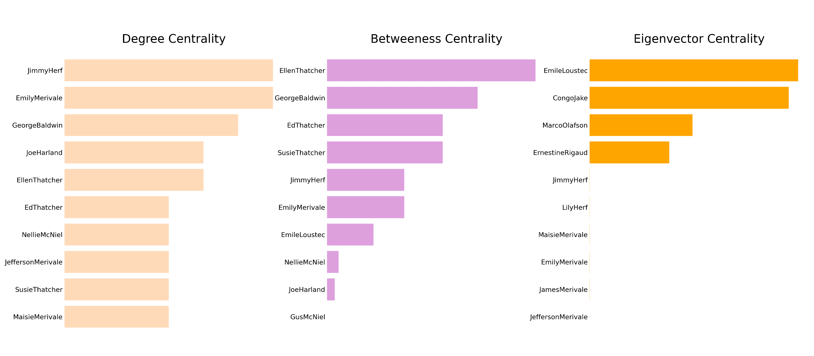

MANHATTAN TRANSFER: A NETWORK ANALYSIS
A network analysis based on characters interactions
Abstract: Abstract about the network analysis of Manhattan Transfer using python
Introduction
This work deals with the network analysis of John Dos Passos’ novel Manhattan Transfer, published in 1925. It is set in New York in the 1920s.
Goals
Premises
Methodology
a. Text Encoding
b. Network and centrality measures with Python + Jupyter Notebook
c. Graph visualization with Gephi
Results
1. Section 1
i. Content
ii. Graph Description
iii. Centrality Measures
iv. Interpretation
2. Section 2
i. Content
ii. Graph Description
iii. Centrality Measures

iv. Interpretation
3. Section 3
i. Content
ii. Graph Description
iii. Centrality Measures

iv. Interpretation
4. Full Text
i. Content
ii. Graph Description
iii. Centrality Measures

iv. Interpretation
Discussion
Conclusion
Conclusion about the network analysis: relevant characters, differences among sections, among centrality measures etc., further possible analysis etc.